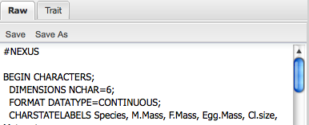
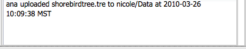

The editor tab houses the ability to view data in raw form or as a cladogram (tree) or in a tabular format (traits). The user is able to edit the raw file (tree and trait data) and is also able to edit the values contained in the trait table from this tab. Editing within the tree viewer is currently not supported.
The Editor is enabled by selecting a file from the Data Browser or My Data tab. Selection of multiple files for edit is supported in the Available Files table from the My Data tab. There is no mechanism for opening files on the Editor tab itself, therefore files must be enabled for opening by selecting file from the data browser or the available files table on the My Data tab.
Selection of multiple files is enabled from the Available files table in the My Data tab by performing the following actions:
For Mac users: select initial file and hold <command> key while selecting subsequent files.
For PC users: select initial file and hold <control> key while selecting subsequent files.
The editor window has two sections: data visualization and provenance visualization.
Data visualization

The data visualization section of the editor always has a "Raw" tab, which will display the uploaded file in raw format. The visualizer will contain other tabs relevant to the type of data contained in the file (ie. tree visualizer or trait table).
Data is able to be edited in any tab of the data visualization area of the viewer.
Tree Tab: For future releases
Provenance visualization

The provenance visualization section of the Editor contains all the associated metadata contained within a file and metadata concerning actions related to the data (ie. upload time, renaming, etc). Additionally, an indication that the file has been viewed or edited will be reflected in this section. This section cannot be edited.
Multiple editors can be opened at any given time in this tab. More than 2 editor portlets can be navigated by utilizing the scroll bar on the left side of the page. Only one copy of a file can be opened at a time. Editor portlets can be closed by selecting the [X] in the top right corner. Editors can also be moved within the tab by a drag and drop action.